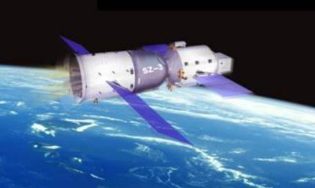

2002年3月25号22时15分，我国研制的神舟三号飞船在酒泉卫星发射中心发射升空并成功进入预定轨道。神舟三号在轨运行7天，各系统工作正常，运行状态良好，完成了预定的全部科学实验和探测任务，取得了圆满成功。这次发射成功标志着我国载人航天工程取得了新的重要进展，为把中国的航天员送上太空打下了坚实的基础。
神舟三号是一艘正样无人飞船，飞船技术状态与载人状态完全一致。与第二次飞行试验相比，主要是增加了逃逸和应急救生功能。飞船具备待发段和上升段应急救生功能，完善了备份伞子系统;运载火箭具备了故障检测和逃逸功能，控制分系统采用了冗余技术。
飞船装载10项44台有效载荷设备，其中返回舱13件、轨道舱11件、附加段20件，以对地观测和科学实验为主，主要包括卷云探测仪、中分辨率成像光谱仪、地球环境监测系统、多工位空间晶体生长炉、空间蛋白质结晶装置、空间细胞生物反应器、空间环境监测系统、窗口组件、有效载荷公用设备等。飞船自主飞行期间，空间应用系统主要进行了材料科学和生命科学试验，同时穿插进行部分光学遥感在轨测试试验及地球环境探测和空间环境高层大气监测仪器的试验任务。留轨期间，主要进行中分辨率成像光谱仪、卷云探测仪和地球环境探测设备的光学遥感对地探测试验，并进行空间环境高层大气监测试验。
飞船上装有的人体代谢模拟装置、拟人生理信号设备以及形体假人，能够定量模拟航天员在太空中的重要生理活动参数。
